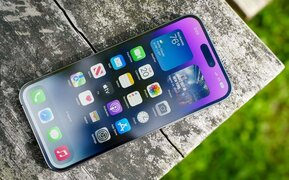

CASE STUDY BETWEEN GOOGLE LENS AND MOBILENET ( WITH MOBILENET V2 )
vs
vs
Comparison-1: Google Lens vs MobileNet
1. Test Image -

Output on GOOGLE LENS - Apple iPhone 14 Pro Max
Output on MobileNet Model - Mobile Phone(11.26%)
Result-
Google Lens predicted correct with the correct brand name and product, while MobileNet predicted correct object only with less accuracy than Google lens.
(Hence, Google Lens wins!!!!! and leads by 1:0).
2. Test Image -
Output on GOOGLE LENS - Lamborghini Huracán (Sports Car)
Output on MobileNet Model - Sports Car(96.4%)
Result-
Both Google Lens and MobileNet predicted correct. But, Google Lens guess it with correct car name, brand name and type of car. While, MobileNet have guessed only right type.
So, Google Lens predicted more accurate. (Hence, Google Lens wins again!!!!! and leads by 2:0).
3. Test Image -
Output on GOOGLE LENS - Pillars of Creation
Output on MobileNet Model - Jellyfish (47.7%)
Result-
It is Star Formation image but none of them guessed it. But, The Pillars of Creation by Google Lens is the name of the star formation. So, We will consider it correct as the name is correct. But, The MobileNet have guessed it wrong.
So, Google Lens predicted correct. (Hence, Google Lens wins the comparison!!!!! and made an hatrick against MobileNet leads by 3:0).
Extra - Comparison-2: Google Lens vs MobileNet V2
1. Test Image -
Output on GOOGLE LENS - Indian Railways
Output on MobileNet V2 Model - Electric Locomotive(95%)
Result-
Both output was best on their side. The output on google lens tells the answer with country of train. While, MobileNet tells the type of train and it is a tie. MobileNet V2 wins against the MobileNet V1 by guessing and getting 1 mark against Google Lens. As, MobileNet V1 got 0 points against Google Lens.
Hence, Both predicted correct. (It's a tie !!!!! Draw 1:1).
2. Test Image -
Output on GOOGLE LENS - Royal Caribbean International
Output on MobileNet V2 Model - Liner
Result-
Royal Caribbean International is a one of the leading cruise companies in the world, which is correct. While, Liner is a large ship that carries people, etc. long distances, which is also correct.
Hence, Both predicted correct. (It's a tie !!!!! Draw 2:2).
3. Test Image -
Output on GOOGLE LENS - Juzfun Captain America Pencil Case
Output on MobileNet V2 Model - Street sign
Result-
Hence, Google Lens wins as it tells whole brand and model name with object. While, MobileNet V2 is showing wrong object name .
So, Google Lens predicted correct. (Hence, Google Lens wins the comparisons and made an hatrick against MobileNet V2 and leads by 3:2!!!!!).